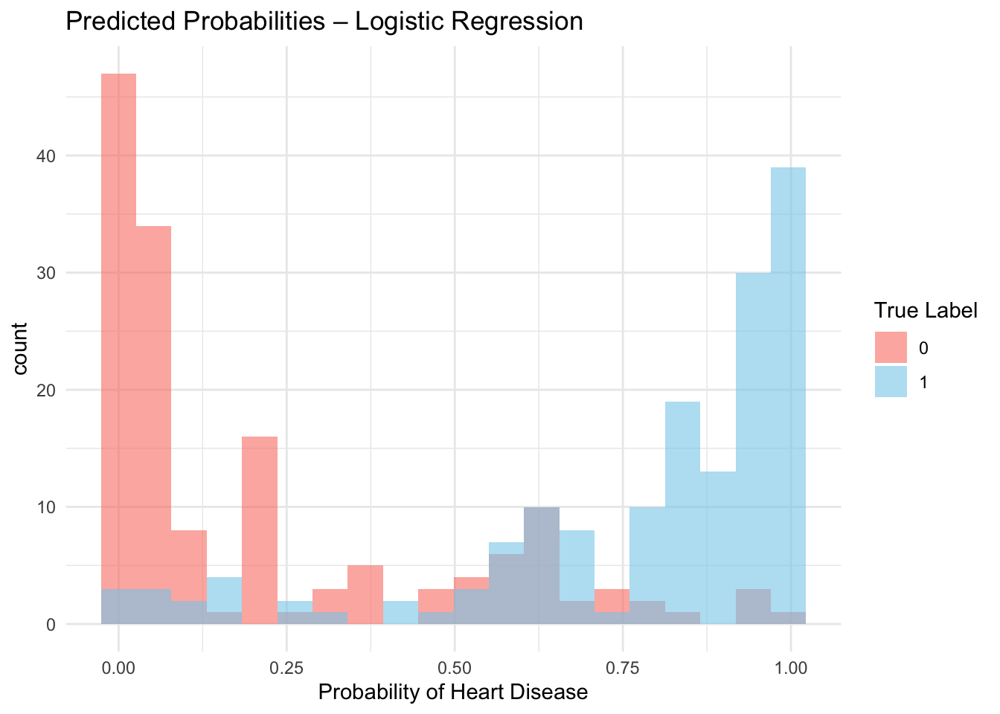
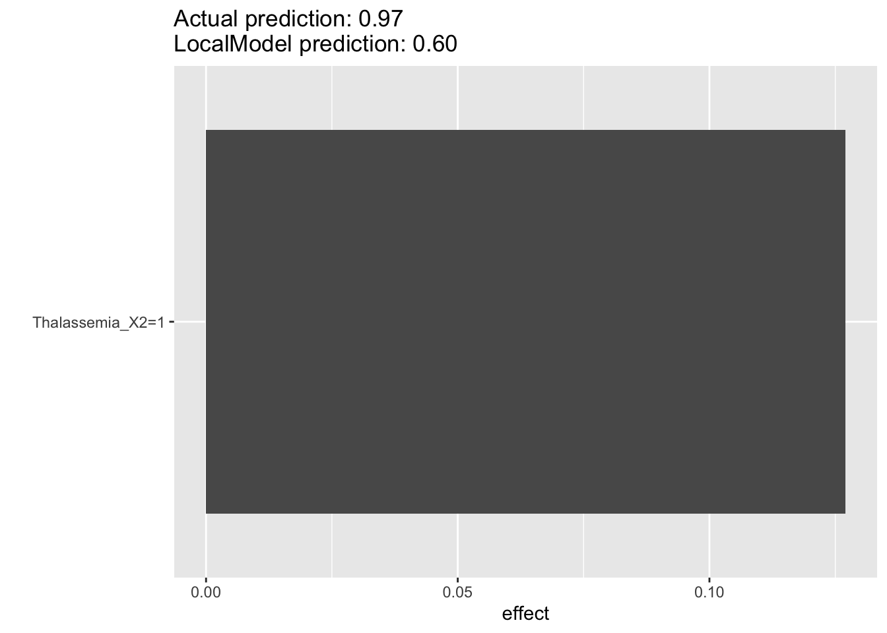

We trained a logistic regression model using the tidymodels framework. This interpretable model provides a performance baseline and supports local explanation using the iml package.
8.1 Model Setup and Workflow
Code
library(tidymodels)library(iml)library(tidyverse)# Model specificationlogistic_spec <-logistic_reg() %>%set_engine("glm") %>%set_mode("classification")# Recipe for preprocessinglog_recipe <-recipe(HeartDisease ~ ., data = heart_train) %>%step_dummy(all_nominal_predictors()) %>%step_zv(all_predictors())# Combine into workflowlogistic_wf <-workflow() %>%add_model(logistic_spec) %>%add_recipe(log_recipe)# Fit the modellogistic_fit <-fit(logistic_wf, data = heart_train)
8.2 Predicted Probability Distribution
Code
log_preds <-predict(logistic_fit, heart_test, type ="prob") %>%bind_cols(predict(logistic_fit, heart_test)) %>%bind_cols(heart_test)ggplot(log_preds, aes(x = .pred_1, fill =as.factor(HeartDisease))) +geom_histogram(position ="identity", bins =20, alpha =0.6) +labs(title ="Predicted Probabilities – Logistic Regression",x ="Probability of Heart Disease", fill ="True Label") +scale_fill_manual(values =c("0"="salmon", "1"="skyblue")) +theme_minimal()

This plot shows that the model does a decent job separating the two classes:
Predictions for patients without heart disease (red bars) are mostly clustered near 0, as expected.
Predictions for patients with heart disease (blue bars) tend to gather near 1, which is good.
However, there’s a bit more overlap in the middle region (around 0.4 to 0.7) compared to models like Random Forest or SVM, which suggests:
The logistic regression model is simpler and more linear, so it may not capture complex interactions as well.
Some borderline cases are less confidently classified, which is reflected in the moderate overlap.
The ROC curve shows strong performance: it rises steeply to the top-left, indicating the model does a good job distinguishing between classes across thresholds. AUC is high, confirming reliable classification.
The logistic regression model achieved an accuracy of 83.8% and an AUC of 0.91 on the test set. This indicates that while its classification accuracy is slightly lower than that of more complex models like neural networks or SVMs, it still demonstrates strong discriminative power.
The coefficient plot shows how each predictor influences the log-odds of heart disease:
ChestPainType_X2 and X3 have the strongest positive coefficients, meaning patients with these types of chest pain are more likely to have heart disease.
Sex_X1 (male) and ExerciseAngina_X1 also have strong negative coefficients, indicating lower predicted probability of heart disease when they are 0 (i.e., female or no angina), and higher risk when present.
Features like Thalassemia_X2/X1, RestingECG_X1, and Slope show meaningful effects as well.
Coefficients closer to zero (e.g., Age, Cholesterol) suggest those variables have weaker or uncertain influence on the prediction.
Error bars reflect uncertainty—wider intervals suggest less confident estimates.
8.7 Local Explanation with iml
We use the iml package to generate local explanations for individual predictions. This helps us understand which features contributed most to the prediction of a single test case.
# Example: Explain one prediction# Choose one test sample (and preprocess it)sample_log <-bake(prep_log, new_data = sample_cases[1, ]) %>%select(-HeartDisease)# Generate local explanationlocal_log <- LocalModel$new(predictor_log, x.interest = sample_log)
Loading required package: glmnet
Loading required package: Matrix
Attaching package: 'Matrix'
The following objects are masked from 'package:tidyr':
expand, pack, unpack
Loaded glmnet 4.1-8
Loading required package: gower
Warning in private$aggregate(): Had to choose a smaller k
Code
plot(local_log)

From the Local Explanation plot, we find that: The model predicted a very high risk (0.97), and the local explanation shows that this is mainly driven by the patient having Thalassemia type X2. While the local approximation gives a lower score (0.60), it still indicates elevated risk, highlighting the strong influence of this single feature.
Code
# Save fitted model for explanation via IMLsaveRDS(logistic_fit, file ="scripts/logistic_fit.rds")
8.8 Model Summary
Logistic regression is inherently interpretable and delivers strong performance, with accuracy = 0.84 and AUC = 0.91.
Confusion Matrix: Balanced classification between positive and negative cases. - ROC Curve: Steep rise toward the top-left, indicating strong discriminative ability. - Probability Distribution: Predicted probabilities separate well between classes, though moderate overlap around 0.4–0.7 reflects lower confidence on borderline cases. - Coefficient Plot: Highlights important predictors like ChestPainType, Thalassemia, and ExerciseAngina, offering insights into feature influence. - Local Explanation (via iml): Simulates LIME-style explanation for a single prediction, helping understand individual decisions.
We used iml::LocalModel to simulate LIME-style explanation for a single prediction.
This allows comparison with post-hoc explanations of black-box models like random forest and neural